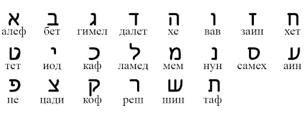

Историческая справка:
Жители Иудейского царства (500 г. до н. э.) изобрели простейший шифр замены Атбаш. Правило шифрования состоит в замене i -й буквы алфавита буквой с номером n − i + 1 , где n — число букв в алфавите.
Название шифра Атбаш обусловлено принципом замены букв. Это слово составлено из букв Алеф, Таф, Бет, Шин, то есть первой и последней, второй и предпоследней букв еврейского алфавита.
В Ветхом Завете Библии существует пример использования шифра Атбаш, а именно в книге Иеремии (глава 25, стих 26) пишется:
“и всех царей севера, близких друг к другу и дальних, и все царства земные, которые на лице земли, а царь Сесаха выпьет после них.”
В еврейском языке слово “Сесах” записывается как “шин-шин-каф”, где “шин” — это предпоследняя буква, а “каф” — двенадцатая буква с конца алфавита. Если мы эти буквы соответственно заменим на вторую и двенадцатую букву с начала алфавита, то получим слово “бет-бет-ламед”. В переводе на английский это “Babel”, то есть “Вавилон”.
